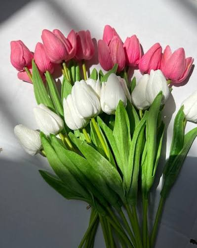
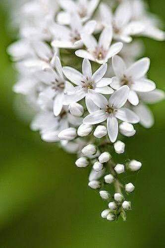

أجمل أنواع الورود
الورود هي رمز الجمال والطبيعة، وفي هذه الصفحة سنتعرف على ثلاثة أنواع رائعة من الورود وألوانها وكيفية الاعتناء بها.
1. الورد الجوري (Rose)
يعتبر الورد الجوري من أقدم وأشهر ورود الزينة، وهو يتميز برائحته العطرة والنفاذة ومظهره الفاخر الذي يوحي بالرومانسية. يعود أصل بعض أنواعه إلى دمشق ولذلك يعرف بالورد الدمشقي.

أشهر ألوان الورد الجوري ودلالاتها:
- اللون الأحمر: يعبر عن الحب الحقيقي.
- اللون الأبيض: يعبر عن النقاء والسلام.
- اللون الأصفر: يعبر عن الصداقة والغيرة.
2. زهرة التوليب (Tulip)
زهرة التوليب هي زهرة فريدة تمتاز بشكلها الذي يشبه الكوب أو الفنجان المغلق. إنها ترمز للأنقة والجمال الناعم، وتشتهر بها دول مثل هولندا بشكل كبير جداً.

ألوان زهرة التوليب المتوفرة:
- الوردي الناعم.
- الأرجواني الملكي.
- البرتقالي المشع.
3. زهرة الياسمين (Jasmine)
الياسمين هو زهرة صغيرة الحجم لكنها تمتلك رائحة قوية جداً وفواحة، وغالباً ما تنتشر رائحتها في المساء (رائحة ليلية). تستخدم هذه الزهرة كثيراً في صناعة العطور الفاخرة والشاي.

ألوان زهرة الياسمين الشائعة:
- الأبيض الناصع (وهو الأكثر شهرة).
- الأصفر الفاتح.
نصائح عامة للإعتناء بالورود (الحفاظ على نضارتها)
لكي تعيش الورود لفترة أطول وتظل زاهية، ننصح باتباع الخطوات التالية مرتبة حسب الأهمية:
- الري المنتظم: سقاية الورود بالماء بانتظام دون إفراط (تجنب غمر الجذور بالكامل).
- الإضاءة: وضع الورود في مكان تصله أشعة الشمس غير المباشرة لمدة 6 ساعات يومياً.
- التقليم: إزالة الأوراق والبتلات الذابلة والأغصان الميتة
(لا تترك الأجزاء الميتة) لتحفيز النمو الجديد.
| نوع الورد |
حاجة الشمس |
حاجة الماء |
| الجوري |
شمس مباشرة |
متوسط |
| التوليب |
جو معتدل |
قليل |
| الياسمين |
شمس دافئة |
منتظم |